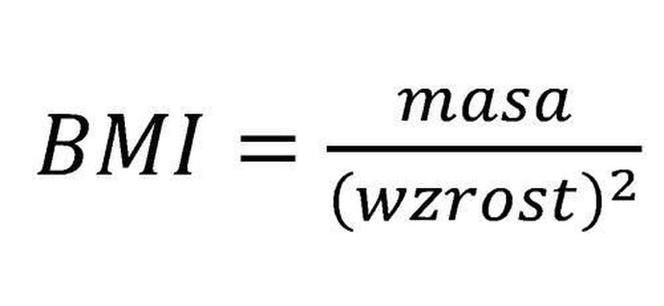

Waga (kg):
Wzrost (cm) :
Twoje BMI:
Interpetacja wyniku:
Wzrost (cm) :
Twoje BMI:
Interpetacja wyniku:
| Wartość BMI | Interpetacja wyniku |
|---|---|
| poniżej 16 | Wygłodzenie |
| 16,0-16,9 | Wychudzenie |
| 17-18,4 | Niedowaga |
| 18,5-24,9 | Waga prawidłowa |
| 25-29,9 | Nadwaga |
| 30-34,9 | Otyłość I stopnia |
| 35-39,9 | Otyłość II stopnia |
| powyżej 40 | Otyłość skrajna |